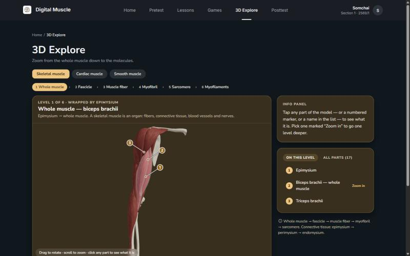
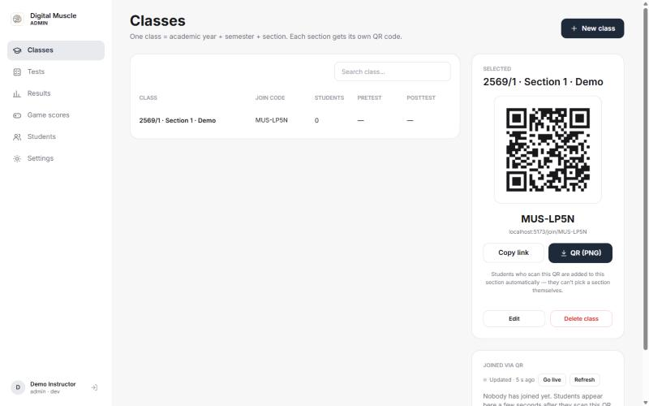
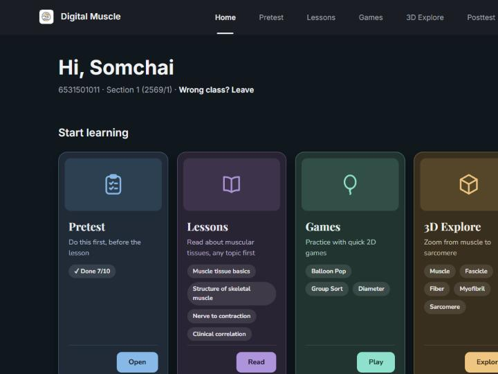
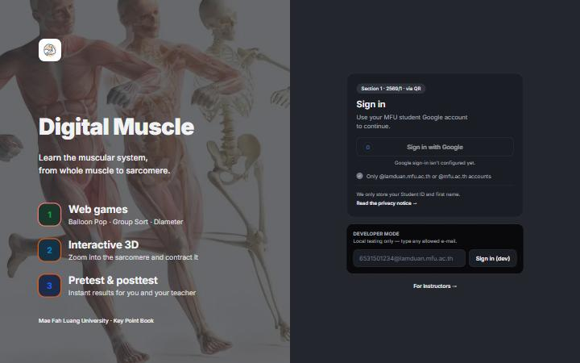

A course tool built from a lecturer's muscle-physiology textbook. Students join a section by scanning its QR code; instructors build the exams and read the results. I built the authentication, the API, the database, the instructor dashboard and the 3D module. My teammate built the games.
สื่อการสอนที่สร้างจากหนังสือเรียนเรื่องระบบกล้ามเนื้อของอาจารย์ นักศึกษาสแกน QR เพื่อเข้า Section อาจารย์สร้างข้อสอบและดูผลได้ ผมทำระบบล็อกอิน API ฐานข้อมูล แดชบอร์ดอาจารย์ และส่วน 3D ส่วนเพื่อนร่วมทีมทำเกม
- About 54 endpoints across 12 route modules, over 9 database migrations
- ราว 54 endpoint ใน 12 route module บน 9 migration
- Google sign-in restricted to the university domain; instructor logins lock after 5 failed tries
- ล็อกอิน Google จำกัดเฉพาะโดเมนมหาวิทยาลัย บัญชีอาจารย์ล็อกเมื่อผิด 5 ครั้ง
- A 3D muscle explorer in three.js with clickable labelled parts
- โมดูลสำรวจกล้ามเนื้อ 3 มิติ ด้วย three.js คลิกดูชื่อแต่ละชิ้นส่วนได้




No public demo: the deployment holds real student accounts and exam results, so these are screens from the app running locally on seeded data. ไม่เปิด demo สาธารณะ เพราะระบบจริงมีบัญชีนักศึกษาและผลสอบจริง ภาพเหล่านี้จึงมาจากการรันแอปในเครื่องด้วยข้อมูลตัวอย่าง